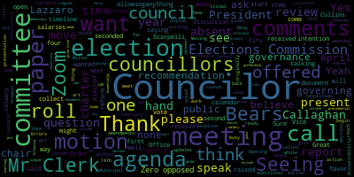
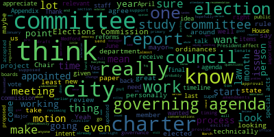
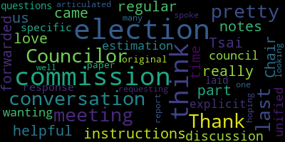

[Tseng]: Order, it's February 14th, 2024. Mr. Clerk, will you please call the roll?
[Hurtubise]: President Ferris. Present. Vice President Collins. Present. Councilor Lazzaro. Present. Councilor Scarpelli said he may be able to join this meeting a little late. I know he has work to do as well at his other job. Chair Tseng.
[Tseng]: Present. For present, one absent. The meeting is called to order. This meeting, we have one action item on the agenda. This is paper 24-06 offered by President Bears. It's a resolution that each council committee review the 2024 to 2025 council governing agenda as amended at the January 24th. committee the whole meeting. Opening up comments to any councillors who want to speak about the governing agenda.
[Bears]: President Bears. Thank you, Chair Tseng. Yeah, just looking at this governing agenda, I think we're blessed in this governance committee to not have one of the super long ones like planning and permitting and even public health and resident services last night, I know, had a lot on there. Really, what is in the governing agenda here is what they, what this committee is responsible for, just go over it again, ordinances, rules, city charter, elections, departments, the city clerk law, law department, elections commission, boards and commissions, variety of relevant city ordinances, I think the ones that are really important to factor in here are Appendix B, the rules of the city council, Appendix C, or special acts that affect the city of Medford, and then Appendix D, which are special acts accepted by the city of Medford. So those are provisions of state law that affect the city. Major project updates to the city charter, estimated length and timing of project 12 to 18 months. I mean, for me, for 4 years, and even before that, I have been pushing for us to have an updated city charter and we really need 1. I think we all at this point, mostly the city agree that we should have a new city charter. This council has proposed home rule petitions to create an elected charter commission, which were not successful. We proposed 6 to 1 last year, some targeted charter amendments, which were not advanced to the state house by the mayor, which would have helped out around the budget. and appointments and support for the city council. So we have really put in a ton of work on that. The mayor also appointed a charter study committee on her own, which has been looking at charter ideas and You know they are supposed to provide a report at some point and then we can start the formal process technically charter amendments have to start with the city council so we can take a look at the research that they've come up with. And we can draft a new city charter, which I'm really excited to do, then we can send that to the mayor. With her approval, she can send it to the state House and state Senate and the governor for their approval. And then hopefully we can have a new charter in effect within the next 2, 3 or 4 years, depending on how that time timeline goes. So that would be, I think, really exciting for this community. I am super excited to get to work on it. Have a lot of great ideas. hopefully would like to see some of the changes that this council has already supported nearly unanimously be incorporated into any new charter as well. So I'm really looking forward to that work in this committee. I know we have it on here starting probably sometime in June. If we could start even earlier, I think that would be great. I think there are a lot of conversations that we could have even in advance of any final report by the Charter Study Committee to really just get going since we only have 23 months left in the term 22 almost, or almost 2 months to end and this project is supposed to be a year, year and a half. So. there's a lot there. I think the only other thing in here is oversight and engagement items. One is the elections department and two is the relevant city ordinances and regulations. We did receive a presentation on January 23rd from the elections manager and elections commission about issues with the November 2023 election. There are also issues with the November 2022 election. I think pretty unanimously the council was wanted more out of that report and those questions. We did receive more from the Elections Commission chair, Henry Malorin, so that was good. But since then, also, the election manager has resigned. So that is not good. There is a lot more. At this time, I think that's just a very major change, given that we're just several weeks out from the primary on March 5th. So regardless of figuring out what what we need to do to get this elections department, the funding and oversight that it needs to do its job effectively. I think the timing of having the main office staff person leave so close to an election is frustrating to say the least. So I'm sure we'll talk more about that, but my guess is that we won't really be able to engage anyone from that office until after the primary at this point. just because I know that they're running around working really hard to get it done. I trust in their efforts and the work that they're putting in, but I know that there is now only one full-time staff person working elections. We used to have five. So that is obviously a huge challenge. Last thing on here is just reviewing the relevant city ordinances and regulations. I think we've talked about this in every other committee. There's a number of outdated things. The most important one, biggest one being part one, the city charter, right? So we will be reviewing that, but I'm sure there are things in boards and commissions, officers and employees, the election section, and even taking a look at the special acts and the acts accepted by the council that could be worth our time. But that's really all that's in the governing agenda. I know we also have the paper on committee, paper and committee from Councilor Callahan about some pro-democracy reforms. That's also in committee, but that's my review of the governing agenda. Looking at it, there was nothing in the governing agenda that's missing from the meeting agenda from the papers and committee, so that's great. And I don't think we really had much else for this committee to take a look at. I think the charter, it's a big enough project on its own. If there are other things from councillors or members of the public around the rules of the city council or additional stuff around elections, I'm sure, I mean, I'd love to talk about it. Thank you, Mr. Chair.
[Tseng]: Thank you, President Bears. I think seeing as there is a paper and committee about elections, maybe we can first take comments from councillors about charter reform if we have any comments from councillors at this time. Councilor Lazzaroa.
[PaKgR4OfzgE_SPEAKER_01]: So as far as charter review, I think there's something to be said. I know that the Charter Commission is interested in continuing there. I know they took a lot of votes recently among themselves about their stances on a few of the issues that they've wanted to review, and I think they're preparing their presentation and their final sort of stuff, but they weren't going to be able to present all of their final recommendations until the end of this year. So that's, you know, 10 months away. And I think it would be beneficial for our committee to have kind of, to be working in tandem with them, like, you know, sort of developing our own thoughts and ideas at the same time, and then, you know, in some ways kind of acting as like a conference committee afterwards and combining ideas, taking some that might be recommendations from the commission and some from ours that make sense and presenting that all maybe to the state house after the fact. Just so that we're not wasting time, you know, trying to do everything one thing at a time, we can all be working at the same time towards the same goal. So I don't see why we wouldn't do that. That's just a thought.
[Tseng]: Thank you, Councilor Lazzaro. Are there any other Councilors who want to speak on charter review? Seeing none on Zoom.
[Bears]: Mr. Chair. Yes. I just want to say, you know, I appreciate the work of the study committee. One person appointed them. We've been elected. And for me personally, I'm certainly willing to look at their recommendations. But again, they're an appointed committee appointed by one person not appointed by even consult. There was no consultation with the city council and the creation of the committee, never mind the appointment of its members or the charge that it has or or the. I just want to I just think I would rather not. I think we could take whatever they have at a certain point and begin our work of going through it. But I think it should be procedurally, step by step. If there's additional material that they want to provide after we've started a certain date, then we can include that in our discussions. And I think that's a great thing. But I don't think we should try to work. I would personally not prefer a tandem process. I think their process can work. If there is a tandem process, I don't think it should be. I still think that the work product of the Charter Study Committee should come to the council and then the council can submit something to the administration. That's just my personal preference because I really, well, I understand that they're working hard and I appreciate the study that they've done and the conversations that they've had. There's a level of legitimacy and responsibility. that comes with being elected by the voters of the city versus being appointed by a single person. And I think also, given just the way that the law works on the charter, technically, the study committee is just an advisory committee that's going to give a report. It doesn't have any force of effective law. Well, I appreciate Councilor Lazzaro's comments. I just wouldn't want it to be like conference committee, like Senate and House, like, you know, if they don't agree, we don't do it. I don't think that that's, you know, at the end of the day, we're the ones who were elected to vote on this. And so if we disagree with the study committee on a recommendation that they make, then the version that we agree to in this chamber would be the one that would be submitted to the mayor, in my view. Or at least that's the process I would like to follow. I think that's all I have to say. Personally.
[Tseng]: Thank you. Thank you, Councilor Bears. Uh it sounds like there's a question about when we should start talking about, um, the art within the City Council Governance Committee about the city charter. Is there a motion to move it up in the
[PaKgR4OfzgE_SPEAKER_01]: What is the timeline right now?
[Tseng]: It currently starts in June, I believe.
[PaKgR4OfzgE_SPEAKER_01]: I think we should move it up. I motion that we should move it up.
[Tseng]: I hear a motion from Councilor Lazzaro to move it up in the governance agenda timeline.
[PaKgR4OfzgE_SPEAKER_01]: Is there a- I don't know, maybe April even. I mean, it does sound reasonable. Do we have time to do that in April?
[Bears]: This committee meets, I mean, maybe the April meeting of this committee can be the first. Because for me, I know that the Collins Center has met with the study committee, and they've had their subcommittees on different issues, and I think there's a ton of value there. I think the general framework of what they've been working on, from what I've been reading coming out of the reports, just structurally makes a lot of sense. there is a section that describes what the powers of X are or the timeline for Y are like. And so I don't, and I'm guessing at this point that the study committee is not, um, at least from the reports I've read, they're not like deciding what the basics are. So I think maybe in April, if the call center could come and give us some of the information that they've given to the study committee, we could, we could get going on, on some of the questions. If we agree to a structure, then we can go through those big bucket issues as well. If there are items where they've taken votes and issued a report out of their subcommittee, then we could take that information and start working there. If there are areas of the charter where they haven't made any determinations or votes, then maybe we could hold those off to the fall. I don't think it's reasonable. I don't think the timeline of we're not going to get anything. For me, December is way too late. It is, you know, I also just don't like the idea that we wouldn't be able to consider things until they've issued a final complete report. And not that you were saying that, but I think that they, that may be something that, I don't know what their opinion is or what the study committee's opinion is on that, but I think we should, I personally would not be willing to wait 10 months for a final report before we start considering it. And I would support the motion to start even earlier than June.
[PaKgR4OfzgE_SPEAKER_01]: Yeah, I, can I?
[Bears]: Yes, Council Member Zora.
[PaKgR4OfzgE_SPEAKER_01]: I think that we're saying a lot of the same things with different words, but when I said in tandem, I meant like, we can start working while they're still working, basically. So, and since this stuff, this committee only meets once a month? committee only meets once a month. So we're, you know, it's going to take a while, I think we should just get started with what we can get started on when we can, and then, you know, acknowledge that it's going to just take a while. So yes, Councilman.
[Bears]: My apologies if I misinterpreted.
[Tseng]: I think we are saying a lot of the same thing.
[PaKgR4OfzgE_SPEAKER_01]: Yeah.
[Tseng]: Yeah. Okay, no comments on Zoom so far. No hands raised that I see. So on Councilor Lazzaro' motion to move the charter review item in the timeline to April, to begin in April, seconded by Councilor Bears. Mr. Clerk, can you call the roll? I think Councilor Collins is online, so.
[Hurtubise]: Hang on a second.
[Tseng]: No worries. And as chair, I can reach out to the call-in center as well to see if they're willing to come to our April meeting with a baseline of recommendations that they're ready to present. Mr. Clerk, can you call the roll, please? Sure.
[Hurtubise]: President Bears.
[Tseng]: Yes.
[Hurtubise]: Vice President Collins. Yes. Councilor Lazzaro. Yes. Councilor Scarpelli is absent, Chair Tseng.
[Tseng]: Yes, that's four in favor, one absent. Zero opposed. Zero opposed. Moving on to the paper and committee about elections. That's 23-474. This was originally offered by Vice President Bears to ask the Elections Commission for a for a presentation, a report titled the 2023 Municipal Elections Process Errors and Accountability Report, which we got back at an earlier meeting. At that meeting, Councilor Scarpelli offered some amendments. for this committee to meet with the Elections Commission election staff to review the report, ask for updates, and ask for ways that Council can be more supportive. He also asked for additional information which we received from Chair Miller of the Elections Commission. As Councilor Bears said, given how busy the Elections Office is, We wanted to give them their time and space to work on getting the presidential preference primary out of the way first. But I wanted to open the discussion up to any questions that we might want to collect, questions or recommendations that we might want to collect and send to the Elections Commission. Are there any councillors who want to speak on the Elections Commission and the elections report that we've received? I see Vice President Collins' hand raised on Zoom. I'll call on her.
[Collins]: Thank you, Chair Tsai. As for the elections commission, I think that I would just really love for the conversation that we had the last time the election commission came before us in a regular meeting. I think the most helpful instructions that I would like forwarded to the elections commission would just be the meeting notes from that part of our discussion. In my estimation, I think the council was pretty unified in just wanting a more explicit and a more specific response to the questions that we laid out in the original paper requesting the election after report. And so that's, as one Councilor, that's what I'll be looking for. That's what I'm hoping for. And I think that that was pretty well articulated by many Councilors who spoke in our last conversation about it with the Elections Commission. Thank you.
[Tseng]: Thank you, Councilor Collins. Are there any more Councilors who want to speak on elections? Councilor Paris.
[Bears]: I would just note that that was at a regular meeting, so we don't have like a verbatim transcript, per se, of what the requests were. I believe we did make some motions, and I'm not sure if that's in the... Can I borrow your committee report, please? Requesting that governance meet with Elections Commission staff to review the reforms of the report. renewed requests for attendance record. So I believe we got the attendance records from Chairman Lawrence. Yes, we did. Yeah, I mean, I think, you know, having spoken with members of the Elections Commission, they want to do an updated version of the more clear after action report that is responsive to here was a problem, here was the solution, you know, that's kind of itemizing it out and saying here was an issue. Here's what we identified as the problem with that issue. Here's the solution that we're implementing to avoid that happening in the future. So I don't have any more motions to make, but I think just inviting them back to probably our March meeting and maybe even our April meetings.
[Tseng]: Great. Yeah. Yeah, I can do that. I can make sure they're invited to our next two meetings. Are there any other comments on the elections part of this agenda? Seeing no hands on Zoom, I'll move on to the next paper and committee 24-024. This one is It was offered by Councilor Callaghan at our second regular meeting in January, I believe. And essentially, Councilor Callaghan referred the following pro-democracy reforms to study in our governance committee. These include salaries for elected officials, public financing of elections, ranked choice voting for single elected offices, allowing 16 and 17-year-olds to vote, allowing non-citizen residents to vote. there's also a section about requesting that our committee prioritize the salary discussion, come to a recommendation before the end of this year, this calendar year, and to implement salaries starting in 2026. I believe that the Councilor's intentions are that we talk about this throughout the calendar year, and so I don't think there's any... intention to pass anything at this meeting, but I see the Councilor who offered this paper on Zoom, so I'll defer to Councilor Callaghan if you have anything to present to us for consideration.
[Callahan]: Thank you so much. So yes, these are a number of pro-democracy reforms. I just want to clarify for folks what I mean by pro-democracy reforms. These are things that ideally would help Medford have more people voting. have better actual voting rates throughout our population and or would allow for people who tend to be underserved by government and underrepresented to be better represented and better served. There are many of these that we could consider. These are the ones that I think that we can consider most easily as a city council in Massachusetts. So the reason why the salaries for elected officials are prioritized is because if any salaries are going to be raised then I personally would prefer, even though this isn't a law on our books, there are cities in Massachusetts and in other places around the country that have laws that say that if salaries are going to be raised, that they need to be decided in the first 18 months of the term, and they cannot take effect until the next term. So the idea of having a recommendation finished by December 31st, out of this committee means that the council could then make a decision before June, which would be within the first 18 months of the term. So that's the reason behind that particular issue. But I will say there is no rush on any of these. Nothing needs to be decided. There's also no There's no legal language on any of these. So this really is just an opening discussion and no rush on any of these. There's no particular timeline for them. So whenever it pleases this particular committee to put them on the agenda, I would be happy to appear again.
[Tseng]: Thank you, Councilor Callaghan. Are there any other comments on this paper at this time from councillors? Seeing none, seeing no hands on Zoom, do we have any, I guess, I'll open this meeting up to public participation. Are there any comments from the public on any of the papers that we've been talking about tonight? Seeing none, are there any motions for any of these papers? Motion.
[Bears]: Motion to receive 24-006 and place on file. And adjourn.
[Tseng]: Motion from Councilor Burrus to receive 24-006, to receive and place on file, and seconded by Councilor Lazzaro. Mr. Clerk, both of you are second. And adjourn, sorry. and I can do the roll call, great. Mr. Clerk, can you please call the roll?
[Callahan]: From the public?
[Tseng]: Oh, Councilor Calderon.
[Callahan]: Thank you. In our last meeting, not the last meeting, but one of the meetings we had yesterday, I believe that the clerk said that if we receive and place on file, then we're essentially putting it away to not look at again. We have to reopen it if we need to. Doesn't this just remain as something that is, don't we need to not receive and place this on file? I'm asking maybe the clerk.
[Hurtubise]: Are you asking me?
[Callahan]: I am, thank you.
[Hurtubise]: I think you can reopen it. I also think you can move to leave it in committee. My understanding is that if you receive and place on file, it gets disposed of, but that would be the will of the committee if the committee votes for that. Council members, do you have a?
[Bears]: Yeah, my intent here, at least my intent was referring these out was that like the committees would look at the draft once and make sure that it matched up with what they had in committee. And then we set up alternatively the six, 12 and 18 month review of the governing agenda in committee of the whole. So we'll still come back to it and I'm sure anyone can file you know, to review the governing agenda at any time. But I don't, honestly, I feel a little wary keeping it on the papers and committee because then already having the governing agenda on means basically you can just talk about anything you want at any time, which is a little, I don't know. It's just, so there's a lot in here, right? And technically it's on the agenda. So technically by open meeting law, you know, I mean, it's open meeting was a rabbit hole in and of itself. It doesn't really make sense, but that's my intent by this motion is just to say, okay, we've, we've taken a look at this as it was amended by the full counseling committee of the whole in January. Everything that's on here is, is what should be on here. And then, you know, the vice president and I will put the governing agenda on for us to look back at in June again and see what progress we've made collectively across all the committees. Thank you. And if you wanted, we could motion to add the pro-democracy reforms here under the governing agenda. I just want to make sure everything matches.
[Tseng]: That's up to this committee. I don't know if there are any councillors who want to motion to that. It will also live in committee as well. So it's on our agenda.
[Bears]: Right. And that's really more of us. Just let's make sure. I knew there were some items that weren't here that didn't make it onto agendas yet. So I wanted committees to have a chance to discuss. Yeah.
[Tseng]: I think that totally makes sense. It's also my understanding, as we've said in many council meetings before, that the governing agenda is a working document. It's a living and breathing document. So we can reopen it at any time and adjust to it. Thank you for that question, Councilor Callahan. Mr. Clerk, could you please call the roll?
[Hurtubise]: President Bears? Yes. Vice President Collins? Yes. Councilor Lazzaro?
[Tseng]: Yes, Councilor Scarpelli is absent chair saying, yes, four in favor zero opposed, and one absent. The meeting is now adjourned.
|
total time: 7.64 minutes total words: 964  |
total time: 13.31 minutes total words: 2337  |
total time: 0.9 minutes total words: 143  |
total time: 2.72 minutes total words: 376 |
{kind=link}
{kind=link}
{kind=link}
{kind=link}